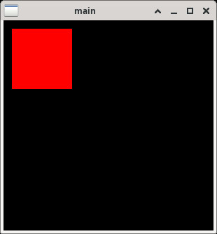

參考資訊：
https://tkdocs.com/shipman/
https://www.pythontutorial.net/tkinter/tkinter-window/
main.py
import tkinter as tk
root = tk.Tk()
root.title('main')
root.geometry('300x300')
canvas = tk.Canvas(root, width = 300, height = 300, bg = 'black')
canvas.grid()
canvas.create_rectangle(10, 10, 100, 100, width = 4, fill = '#ff0000')
root.mainloop()
執行
$ python3 main.py
